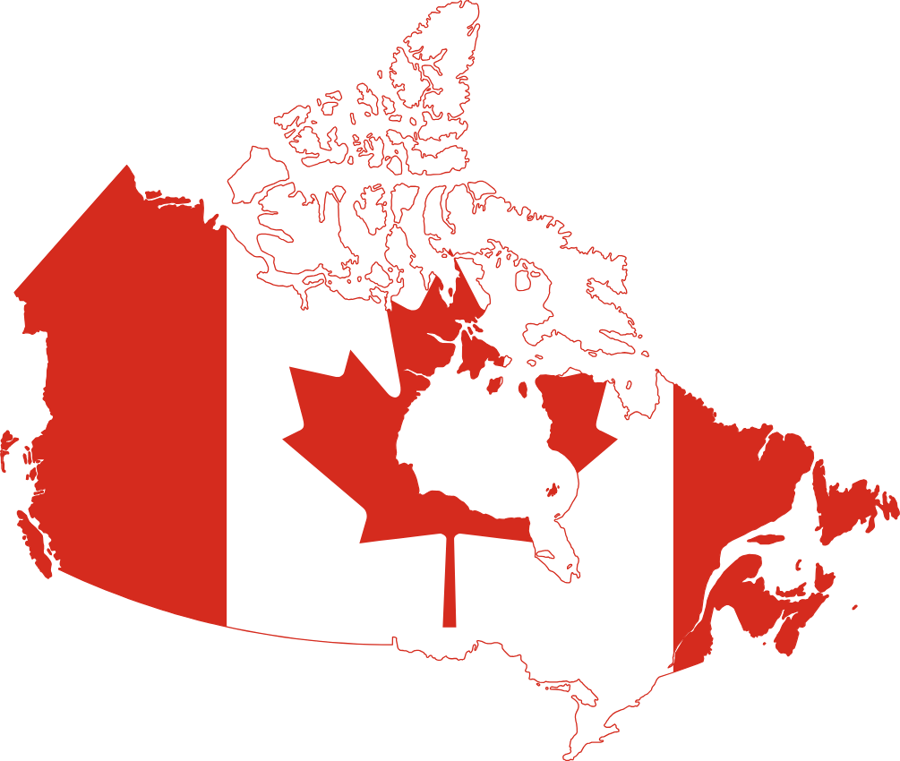

Canada is actually HUGE
71% of the world's maple syrup comes from Canada
The Canada-US border is the longest international border between two countries in the world
The country spans six different time zones
The country has more lakes than the rest of the world combined
Learn about Canada
Canada became a nation in 1867 when the British North America Act united three colonies into the Dominion of Canada, though it remained tied to Britain for decades. The country expanded westward throughout the late 1800s, completing the transcontinental Canadian Pacific Railway in 1885. Indigenous peoples had inhabited the land for thousands of years before European contact, and French and British colonial powers competed for control from the 1600s onward. Canada fought in both World Wars, with significant sacrifices at battles like Vimy Ridge in 1917 helping forge a distinct national identity. The country gradually gained full independence, achieving complete sovereignty with the patriation of its constitution in 1982. Modern Canada is known for its official bilingualism, multiculturalism, universal healthcare system, and vast natural resources stretching across the world's second-largest country by land area.
Learn more about Canada's provinces and territories
Canada is made up of 10 provinces and 3 territories, each with its own unique culture and geography. Ontario and Quebec are the most populated provinces, home to major cities like Toronto, Montreal, and Ottawa. British Columbia on the west coast is famous for its mountains, forests, and mild coastal climate. The Prairie provinces of Alberta, Saskatchewan, and Manitoba are known for their vast farmlands and oil reserves. The three northern territories, Yukon, Northwest Territories, and Nunavut, cover a massive area but have the smallest populations, with stunning arctic landscapes and Indigenous communities.
- Alberta 661,848 sq km
- British Columbia 944,735 sq km
My Alberta
Alberta is a western Canadian province known for its stunning Rocky Mountain landscapes and rich oil sands deposits. The province was established on September 1, 1905, and is named after Princess Louise Caroline Alberta, the fourth daughter of Queen Victoria. Calgary, the largest city, is famous for the annual Calgary Stampede rodeo. Edmonton, the capital, is home to one of North America's largest shopping malls. Alberta has no provincial sales tax, making it one of the most affordable provinces to live in. Banff and Jasper National Parks attract millions of visitors each year with their breathtaking mountain scenery.
Alberta public holidays
Alberta observes several statutory holidays throughout the year. New Year's Day on January 1st kicks off the calendar, followed by Family Day on the third Monday of February, a holiday unique to some Canadian provinces. Good Friday is observed in the spring, and Victoria Day falls on the Monday before May 25th, marking the start of summer for many Albertans. Canada Day on July 1st is one of the biggest celebrations, with fireworks and festivals across the province. Labour Day in September signals the end of summer, while Thanksgiving on the second Monday of October gives families a chance to gather. Remembrance Day on November 11th honours military veterans, and the year closes with Christmas Day on December 25th.
National and Provincial Parks in Alberta
Alberta is home to some of Canada's most spectacular parks. Banff National Park, established in 1885, is the oldest national park in Canada and draws millions of visitors with its turquoise lakes, hot springs, and towering Rocky Mountain peaks. Jasper National Park, the largest in the Canadian Rockies at over 11,000 square kilometers, offers dark sky preserves and stunning glaciers like the Columbia Icefield. Waterton Lakes National Park in southern Alberta connects with Montana's Glacier National Park to form the world's first International Peace Park. Dinosaur Provincial Park near Brooks is a UNESCO World Heritage Site, famous for containing some of the richest dinosaur fossil beds ever discovered. Kananaskis Country, just west of Calgary, is a popular recreation area with hiking, skiing, and camping across its multiple provincial parks and wilderness areas.

IT jobs & work opportunities
Cybersecurity Analyst
Monitors networks and systems to detect security threats, investigating incidents and implementing protective measures. Conducts vulnerability assessments and develops strategies to safeguard organizational data from cyberattacks.
$52.03 an hour
IT Technician
Provides technical support by troubleshooting hardware and software issues, maintaining computer systems and networks. Installs and configures equipment, performs routine maintenance, and assists users with technology-related problems.
$38.5 an hour
Senior Business IT analyst
Bridges business objectives and technology solutions by analyzing organizational needs and recommending IT systems that improve efficiency. Leads requirements gathering, manages stakeholder relationships, and oversees implementation of business-critical technology initiatives.
$120.0 an hour